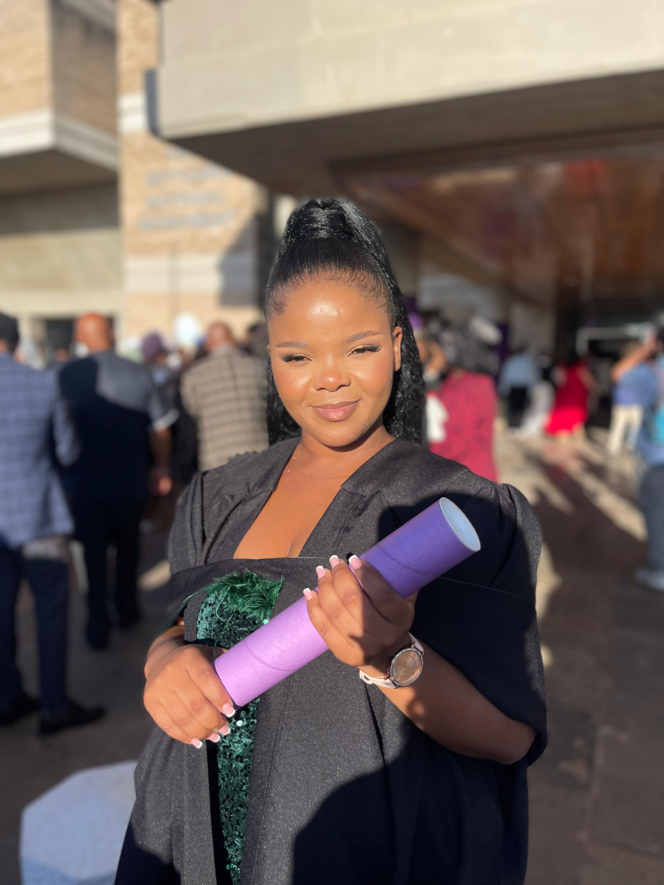

Behind the code and QA reports, I am a resilient and self-motivated professional from South Africa. This graduation photo symbolizes the dedication and perseverance that drive my passion for technology and continuous growth. My curiosity about how things work—from everyday devices to software applications—sparked my enthusiasm for software testing, user interface development, and problem-solving through code. I approach every defect as an opportunity to learn, and I place great value on thorough documentation and data accuracy. I have experience in preparing and reviewing SRS and SDS documents, as well as actively engaging in requirements gathering sessions. These experiences have motivated me to transition into a Business Analyst role, where I aim to effectively bridge the gap between technical teams and business stakeholders. I adhere closely to Agile methodologies, fostering collaboration, adaptability, and continuous improvement within projects. As a dedicated and hardworking individual.